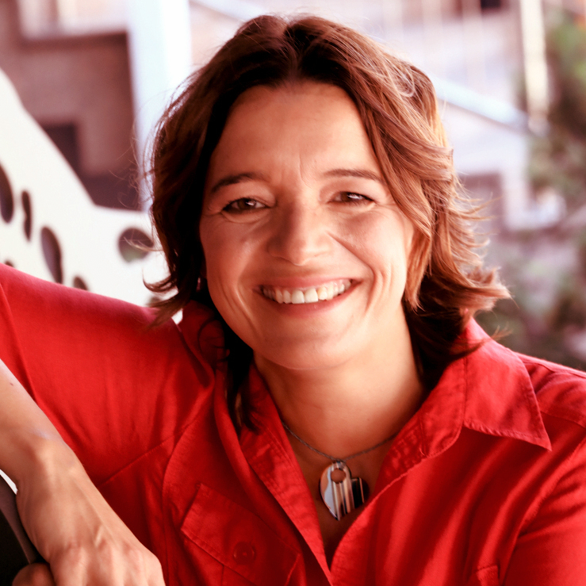
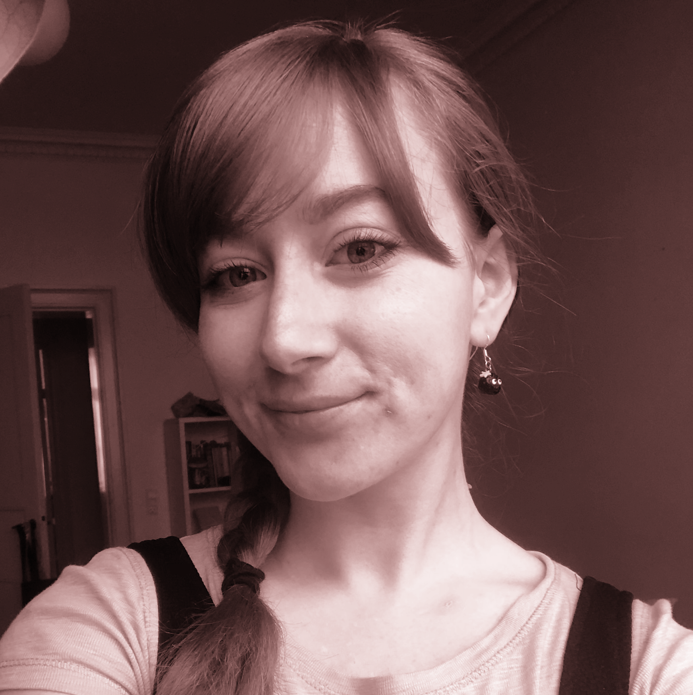
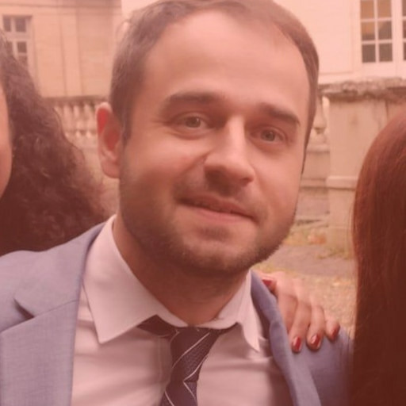

Chris Willott [PI]
Canadian Astronomy Data Centre | Victoria, Canada
Chris Willott is an astronomer with the Canadian Astronomy Data Centre in Victoria, Canada. He studies the evolution of galaxies and black holes in the early Universe. He is most excited to see what surprises the James Webb Space Telescope throws at us. In his spare time, Chris likes to study tiny underwater creatures such as nudibranchs.

Roberto Abraham
University of Toronto | Toronto, Canada
Roberto Abraham is a Professor of Astronomy and Chair of the David A. Dunlap Department of Astronomy and Astrophysics at the University of Toronto. He is a Fellow of the Royal Society of Canada and served as President of the Canadian Astronomical Society. He is most excited about seeing somebody use JWST to discover how massive black holes form very early in the history of the Universe (they shouldn’t be there but are!). Plus, what reionized the Universe? (Betcha it’s little galaxies, but maybe it’s the black holes that shouldn’t exist). Also, dark matter, what the hell? His hobby is amateur astronomy, which demonstrates a very sad lack of imagination.
Yoshihisa Asada
Saint Mary’s University | Halifax, Canada
Yoshihisa (Yoshi) Asada is a Ph.D. candidate at Kyoto University and also a visiting researcher at Saint Mary’s University in Halifax. His research includes the galaxy evolution across the cosmic time, particularly star-formation activities at high-redshift universe. He is most excited to see the rest-frame UV to optical SED and spectrum of galaxies at redshift greater than 4. In his free time, he likes playing video games, listening to music, and watching movies.
Sam Berek
University of Toronto | Toronto, Canada
Sam Berek is a 5th year PhD candidate at the University of Toronto and the Dunlap Institute, and a Data Science Doctoral Student Fellow. She is interested in high redshift, large scale star formation and star clusters. Her work involves studying globular cluster populations of local dwarf galaxies as probes of early episodes of star formation, as well as methodologies for observing the first episodes of star formation in the universe. In her free time, Sam can usually be found in the middle of a long cooking project, taking care of her plants, or trying a new restaurant.

Maruša Bradač
University of California, Davis | Davis, USA
Maruša Bradač is a professor of astronomy and physics at the University of California, Davis. Her research includes studying the composition of the Universe, her specialty being properties of dark matter and the first galaxies that formed in the Universe. She is most excited to see what the little dust-bunnies in the early universe will look like. In her free time, you will most likely find her on her skis, surfboard, or her mountain bike.
Gabriel Brammer
University of Copenhagen | Copenhagen, Denmark
Gabriel Brammer is an associate professor of astronomy at the Cosmic Dawn Center and Niels Bohr Institute at the University of Copenhagen, Denmark. His research involves studying how galaxies evolve across all epochs of cosmic time in large, blank-field surveys. He is most excited to see the full UV-optical spectrum and SED of a galaxy, any galaxy, in the early universe. In his spare time, he can be found on a bike or loading film into an old camera.
Guillaume Desprez
University of Groningen | Groningen, The Netherlands
Guillaume Desprez was previously a Postdoc at Saint Mary's University in Halifax. His research interests include galaxy evolution and strong gravitational lensing, which is a perfect fit with CANUCS. Now that JWST is flying, he is excited about all we can learn about the early age of our universe. Outside of work, Guillaume practices martial arts and enjoys photography.

Katriona Gould
University of Copenhagen | Copenhagen, Denmark
Katriona (Kate) Gould is a PhD Fellow at Cosmic Dawn Center and Niels Bohr Institute at the University of Copenhagen, Denmark, supervised by Gabriel Brammer and Francesco Valentino. Her research interests involve studying curious distant red fuzzies such as quiescent galaxies, dusty galaxies, and anything else with an enticing scientific story. She is most excited about using JWST’s near-infrared capabilities to study these galaxies. Outside of work she can be found glued to her latest painting project, on the (Danish) beach or powerlifting in the gym.
Anishya Harshan
University of Ljubljana | Ljubljana, Slovenia
Anishya Harshan is a post-doctoral researcher at the University of Ljubljana. She studies the evolution of high redshift galaxies and their role in ionising the Universe. Anishya likes everything galaxy, so with JWST and CANUCS, she is excited to learn how the first galaxies were formed and also specifically what was happening with the gas in these young galaxies. Anishya likes to spend her free time exploring the city of Ljubljana and looking for cats to pet.
John Hutchings
Dominion Astrophysical Observatory | Victoria, Canada
John Hutchings was an astronomer at the DAO. He enabled Canada’s participation in JWST back in the 1990s and was project scientist responsible for the Fine Guidance Sensor until delivery of the Canadian instruments in 2012. John was at the forefront of the early study of active galaxies and high-energy galactic objects. He was happy to be around to see JWST finally get off the ground and change human thinking forever. John will be remembered for his insightful contributions to the planning of CANUCS and of course his unique sense of humour.
Kartheik Iyer
University of Toronto | Toronto, Canada
TBD
Naadiyah Jagga
York University | Toronto, Canada
Naadiyah Jagga is a Ph.D. candidate in Astronomy at York University. She is interested in the evolution of galaxies, with focus on the stellar mass of galaxies. Her research, under supervision of Adam Muzzin, involves creating and analysing resolved stellar mass maps of galaxies observed by JWST. She is also a member of Technicolor, JUMPS, and MINERVA. In her free time, Naadiyah enjoys sports, writing, and nature.
Nusrath Jahan
Shahjalal University of Science and Technology | Sylhet, Bangladesh
Nusrath Jahan is an undergraduate student in the Department of Physics at Shahjalal University of Science and Technology (SUST). She is currently working with Prof. Lamiya Mowla on a project using JWST data, focusing on lensed galaxies to study how star clusters and their host galaxies co-evolve over cosmic time. Her research interests focus on observational galaxy formation and evolution and she’s excited to continue exploring this field with JWST in the future. Outside of academics and research, she is involved in astronomy outreach, enjoys spending time with her two pet birds and loves exploring the city with her friends.
Jon Judež
University of Ljubljana | Ljubljana, Slovenia
Jon Judež is a Ph.D. candidate at the University of Ljubljana, working with Prof. Dr. Maruša Bradač. As part of the CANUCS team, his research centers on gravitational lensing, with a particular focus on reconstructing the intrinsic properties of strongly lensed sources. The rich lensing data of CANUCS enables him to study galaxy growth across the first billion years. In his off time, he likes teaching his younger siblings astronomy and enjoys Ballroom & Latin dance.
Shannon MacFarland
Saint Mary’s University | Halifax, Canada
Shannon MacFarland is a MSc student at Saint Mary’s University under the supervision of Marcin Sawicki. Her research focuses on analyzing the spatially resolved properties of galaxies within cosmic noon to understand how galaxies grow and evolve on the main sequence. In her free time, Shannon can be found reading sci-fi/fantasy books, cooking, or playing with her cat.
Danilo Marchesini
Tufts University | Boston, United States
Danilo Marchesini is the Leonard and Jane Holmes Bernstein Professor in Evolutionary Science in the Physics and Astronomy department at Tufts University. He is also the Dean of Research of the School of Arts & Sciences, and he recently served as Chair of the Physics and Astronomy department. He studies galaxy formation and evolution across cosmic time, with a particular interest for massive and quiescent distant galaxies. Outside of work, Danilo loves sailing, playing soccer, traveling, eating good food and spending time with his family.

Vladan Markov
University of Ljubljana | Ljubljana, Slovenia
Vladan Markov is currently a postdoctoral researcher at the Faculty of Mathematics and Physics (FMF), University of Ljubljana. His research focuses on the properties of distant galaxies, particularly the interstellar medium, including molecular and neutral gas, and dust. Vladan has worked on several scientific projects using a combination of observational data, simulations, statistical analysis, and modeling.In addition to my research, he has experience in software development, primarily using Python, with additional expertise in MATLAB, FORTRAN, C, and IDL.

Nick Martis
Saint Mary’s University | Halifax, Canada
Nick Martis is a post-doctoral fellow for St. Mary’s University in Halifax but is lucky to be a visiting worker at NRC’s Herzberg Astronomy and Astrophysics in Victoria, Canada considering his aversion to snow. He studies galaxy evolution, with much of his previous research focused on the cosmic dust within galaxies that prevents their starlight from reaching us. JWST will be a great tool to continue this research, but he is also excited by the potential of CANUCS to see young galaxies near the beginning of the history of the universe. In his spare time, Nick trains and teaches martial arts.
Jasleen Matharu
University of Copenhagen | Copenhagen, Denmark
Jasleen Matharu is a DAWN Fellow at The Cosmic Dawn Center and Niels Bohr Institute at the University of Copenhagen. Her entire career has involved using Space-based Slitless (or “grism”) Spectroscopy from the Hubble Space Telescope to understand how galaxies grow in size, form stars and eventually stop forming stars with spatially resolved studies. She is very excited to see how the more sensitive and higher resolution grisms on JWST open up possibilities in this field. In her spare time, Jasleen can be found reading fiction, binging Netflix, tending to her many houseplants, doing embroidery, playing her Nintendo Switch or cycling around Copenhagen.
Lamiya Mowla
University of Toronto | Toronto, Canada
Lamiya Mowla is a Dunlap Postdoctoral Fellow at the University of Toronto. She studies structure formation of galaxies using a combination of observations and cosmological hydrodynamical simulations. She is looking forward to all the unexpected findings from Webb. Lamiya likes playing fetch with her cat Dora, eating spicy food, walking on city streets, and doing all types of arts and crafts.

Adam Muzzin
York University | Toronto, Canada
Adam Muzzin is an associate professor of astronomy at York University. He studies how distant galaxies grow over cosmic time, with a particular interest in how this is related to their large-scale environment. With JWST and CANUCS Adam is most excited to discover some of the youngest and most distant galaxies ever seen and find out what they look like! Adam does not have hobbies because he is junior faculty, however, his long-term aspirations are to develop some.
Katherine Myers
York University | Toronto, Canada
Katherine Myers is a graduate student of Dr. Adam Muzzin at York University in Toronto, Ontario, and has been a member of CANUCS since 2022. She is interested in galaxy evolution, star formation, and substructure, particularly clumps and emission line maps. In addition to CANUCS, she is a member of the science team for GIRMOS on Gemini North and is interested in adaptive optics. Outside of research, she is passionate about public policy and government, diversity and advocacy initiatives, and science communication. Katherine is originally from Nova Scotia, and is an NBA fan who enjoys team sports, painting, reading nonfiction, and visiting museums.

Gaël Noirot
Space Telescope Science Institute | Baltimore, USA
Gaël Noirot is a JWST Instrument Scientist at STScI in Baltimore, working for the Canadian Space Agency. Lately, he’s been particularly interested in what we can learn from broadband and grism spectroscopy SED-fitting techniques about galaxy quenching pathways and their timescales in the early universe, plus many other grism related topics. Gaël was super thrilled to see JWST’s launch in-person from Kourou. Hurray, the rocket didn't explode! Outside work, you might find him dancing, or dancing, or dancing some more, among many other things.

Camilla Pacifici
Space Telescope Science Institute | Baltimore, USA
Camilla Pacifici is an instrument scientist at the Space Telescope Science Institute in Baltimore working for the Canadian Space Agency. Cami is interested in galaxy formation and evolution. She likes to extract star formation histories from the light in galaxy spectral energy distributions. Cami is looking forward to seeing very young, far away galaxies with JWST to understand how everything started (and it is easier to measure history in a young Universe). In her spare time, Cami likes to dance in any style, on any music.
Gregor Rihtaršič
University of Ljubljana | Ljubljana, Slovenia
Gregor Rihtaršič is a Ph.D. candidate at University of Ljubljana (Slovenia), supervised by Maruša Bradač. His research includes gravitational lensing in galaxy clusters. He is most excited to see how the new JWST data will be able to constrain the lens models providing a better insight into the dark matter distribution in massive clusters. In his free time he likes going for a walk, making music and playing saxophone.

Ghassan Sarrouh
York University | Toronto, Canada
Ghassan Sarrouh is a PhD candidate at York University working under the supervision of Prof. Adam Muzzin. He is interested in early galaxy populations, in particular how early galaxies built up their stellar mass. He takes a data-driven approach focusing on the type of data required to accurately constrain stellar mass in high-redshift galaxies, and data reduction techniques to minimize systematic effects in large galaxy samples not captured by traditional uncertainties. Outside of astronomy Ghassan enjoys cooking, collecting vinyl, and spending time with friends, family, and his dog.
Marcin Sawicki
Saint Mary’s University | Halifax, Canada
Marcin Sawicki is a professor of astronomy and Canada Research Chair at Saint Mary’s University in Halifax, Canada. He studies the evolution of star-forming and quiescent galaxies across cosmic time. He is looking forward to seeing what the spatial and spectral resolution of JWST will tell us about how star formation and other properties are distributed inside distant galaxies. When not doing astronomy, Marcin likes to bang wadaiko drums.
Visal Sok
York University | Toronto, Canada
Visal Sok is a PhD candidate at York University in Toronto. His research focuses on the evolution of galaxies at cosmic noon, and in particular, understanding what causes clumpy star formation in these galaxies. With JWST, he is excited to see whether the same physical processes drive star formation in more distant galaxies. While not pondering about the origin of clumpy galaxies, he decompresses at the gym and is learning to play the guitar.
Victoria Strait
University of Copenhagen | Copenhagen, Denmark
Victoria Strait is a DAWN Fellow at the Cosmic Dawn Center within the Niels Bohr Institute at the University of Copenhagen. She studies the properties of lensed galaxies at high redshift, during and after the Epoch of Reionization, and enjoys working with students and teaching. In free time she enjoys climbing and hiking.
Vivian Tan
York University | Toronto, Canada
Vivian Tan is a PhD Candidate at York University in Toronto. Her research interests focus on the mass assembly histories of Milky Way mass galaxies, especially how the progenitors of Milky Way-like galaxies formed and built up their stellar masses, and changed in morphology over time. Now that JWST can resolve even very small galaxies at high redshift, she is eager to see whether observations of Milky Way progenitors in the early universe matches up with simulations of Milky Way growth. In her spare time, Vivian likes to read novels, draw comics, and write stories.
Roberta Tripodi
University of Ljubljana | Ljubljana, Slovenia
Roberta Tripodi is a post-doctoral researcher at the University of Ljubljana. She is mainly interested in the evolution of AGNs and their host galaxies at high-z. In particular, during her PhD she used the powerful capabilities of ALMA to investigate the QSO-host evolution at z>6. She is now very excited to work with JWST and CANUCS, since she aims to explore low-mass and low-luminosity AGNs at high-z. Roberta is also bookaholic, especially fantasy books, and loves long walks in the nature.
Sunna Withers
York University | Toronto, Canada
Sunna Withers is an MSc student at York University. Her research focuses on selecting extreme emission line galaxies using NIRCam medium band photometry. She is most excited to look for extreme emission line galaxies in the early Universe, particularly very faint galaxies.

Johannes Zabl
Saint Mary's University | Halifax, Canada
Johannes Zabl is a post-doctoral fellow at Saint Mary's University in Halifax, Canada. He studies distant galaxies and their surrounding circumgalactic medium to understand how gas flows regulate galaxy evolution. With JWST, he hopes to get novel insights into these processes, both in individual galaxies and statistical samples. In his off time, he likes to cycle/run or take pictures of the world.